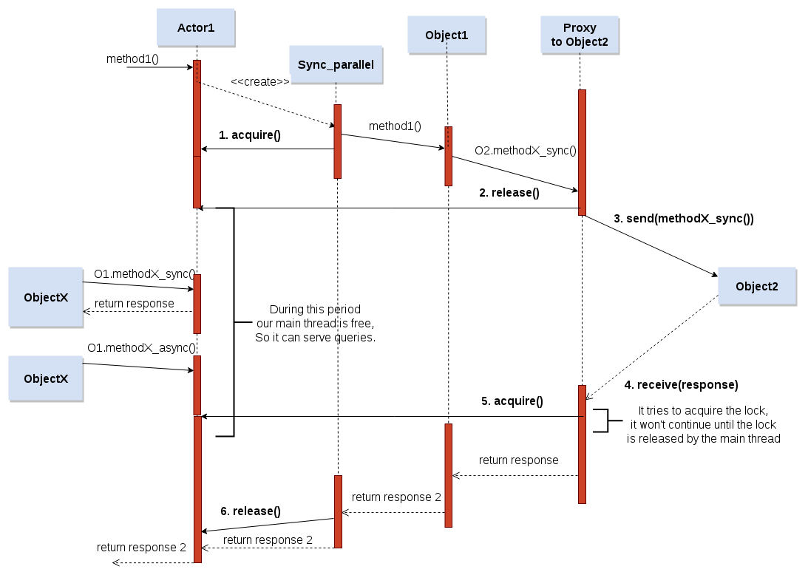

Context
The Continuation Complexity problem leads us to a paradox in Actor models: synchronous blocking calls are needed to correctly implement RPCs in order to avoid breaking the code into asynchronous messages and handlers. But Actor models are purely asynchronous, and using synchronous calls would block the calling Actor unique thread of control until the response arrives.
The aforementioned paradox also represents a burden for Object Oriented Actor libraries. If only asynchronous calls are allowed, the resulting code breaks with the traditional object oriented paradigm and complicates the resulting code.
To solve this problem, we present a novel method invocation abstraction called parallel, enabling synchronous invocations to other Actors, without stalling the current Actor’s thread of control. Our parallel calls enable concurrent interleavings of method executions within a single Actor.
Concurrency Control
The major challenge is to enable concurrent interleaving of method executions within a single Actor. We mainly want to allow the main Actor thread to continue processing incoming method requests while the parallel thread is blocked waiting for a response in a remote Actor due to a synchronous invocation.
We present two solutions: one based on threads and locks and another based on green threads and continuations,
Solution 1 Threads: The Actor implementation will spawn normal threads in the Scheduler and Parallel Methods threads. To achieve consistency between Scheduler and Parallel threads, we use traditional Thread Lock mechanisms that prevent multiple threads to access the same object at the same time. Similar to the Monitor Object pattern, we use a Lock in the Actor object that is only activated when parallel threads are spawned. We aim to provide here a simple solution to demonstrate that parallel threads can coexist with the Actor main thread without conflicting with the servant object shared state. Our lock mechanism is completely transparent to the developer, so that the simplicity of the message passing concurrency model is not affected.

In the figure above we can see how our solution handles the concurrency problem. In this flow diagram we can observe where it uses the Lock acquire and Lock release primitives in a call flow. In addition, it is necessary to know that a single Lock is shared between Actor and Parallel Threads wrappers for each Actor. The life cycle is the following:
- Acquire: When a call is incoming, if it exists some parallel call in the object, we need to acquire the lock to be sure that only one thread at this time is using the object. In Fig. 2, we show an example with a parallel synchronous call. At this moment, a parallel thread takes the control of the object, and any other thread can not access to the object.
- Release: The parallel thread sends the synchronous invocation to a remote actor. In this moment, the parallel actor releases the lock so that the main thread or other parallel threads can continue working. This is the key point where the Actor is not blocked until the response arrives, and it can process incoming messages.
- Acquire: While the parallel thread is waiting the response, our main thread and other parallel threads can serve other petitions. When the response arrives to the Proxy, the Parallel thread will be able to continue execut- ing the method. Nonetheless, it must try to acquire the Lock, because it is possible that the Lock is now in possession of another Thread.
- Release: Finally, when the multicalls return object method ends, the parallel synchronous wrapper will release the Lock, and it will end its process.
As we can see, our solution ensures that only one thread access the shared state, but also that waiting for a response in a parallel thread will not preclude the main thread to process incoming messages. Obviously, we control whether the response will not return using a timeout. Using this system we guarantee that the main thread will not be blocked even if the response does not arrive.
Our solution permits to increase the Actor service time because it avoids blocking the Actor during synchronous invocations. We guarantee the correct interleavings of Actor parallel and main threads. Furthermore, we maintain the simplicity of message passing concurrency since the developer is still unaware of this concurrency control mechanisms. He must only tag the appropriate methods as parallel when necessary.
Solution 2: Micro Threads and Continuations: In this case, we can use the same figure used in the solution 1, but removing the acquire and release invocations. In that case, we don’t need to use a lock system. This is because in a single-threaded environment, two microthreads cannot modify the same state at the same time because their execution is sequential.
We assume here that the send and receive primitives in microthreads will execute a context-switch to other green thread processing the communication to other Actor. Following, we will try to explain better this process, step by step:
- send: When a proxy sends a synchronous message to another Actor, it auto- matically releases its control to other microthread.
- receive: Parallel microthread will be inactive until it will receive a message. At moment that it will receive a message it will wake up and wait for its turn to continue the method execution. The implicit continuation implies that the code continues from that point.
Since send and receive policies are executed inside the Proxy, the developer is completely unaware of context-switches and continuations. Furthermore, in this case there is no need to use locks to prevent concurrent access.
Example using parallel
Note: If you remove the start method from parallel list, you will be able to look another result, because the node 1 will be blocked.
from pyactive.controller import init_host, launch, start_controller, sleep
class Node(object):
_sync = {'send_msg':'50', 'return_msg':'50'}
_async = ['print_some', 'start', 'start_n3', "registry_node"]
_parallel = []
_ref = ["registry_node"]
def registry_node(self, n2):
self.remote = n2
def send_msg(self):
print self.remote
msg = self.remote.return_msg()
print msg
return True
def return_msg(self):
print 'im here'
sleep(10)
print 'after sleep'
return 'Hello World'
def print_some(self):
print 'hello print some'
def start(self):
print 'call ...'
msg = self.remote.return_msg()
print msg
def start_n3(self):
for i in range(6):
self.remote.print_some()
def test1():
host = init_host()
n2 = host.spawn_id('2','parallel1','Node',[])
n1 = host.spawn_id('1','parallel1','Node',[])
n3 = host.spawn_id('3','parallel1','Node',[])
n2.registry_node(n1)
n1.registry_node(n2)
n3.registry_node(n1)
n1.start()
sleep(1)
n3.start_n3()
sleep(10)
def main():
start_controller('pyactive_thread')
launch(test1)
if __name__ == "__main__":
main()